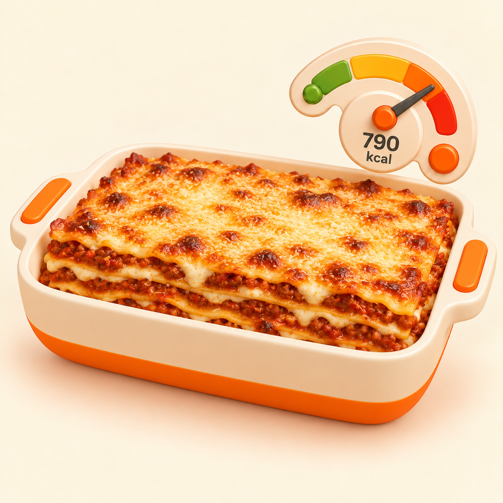
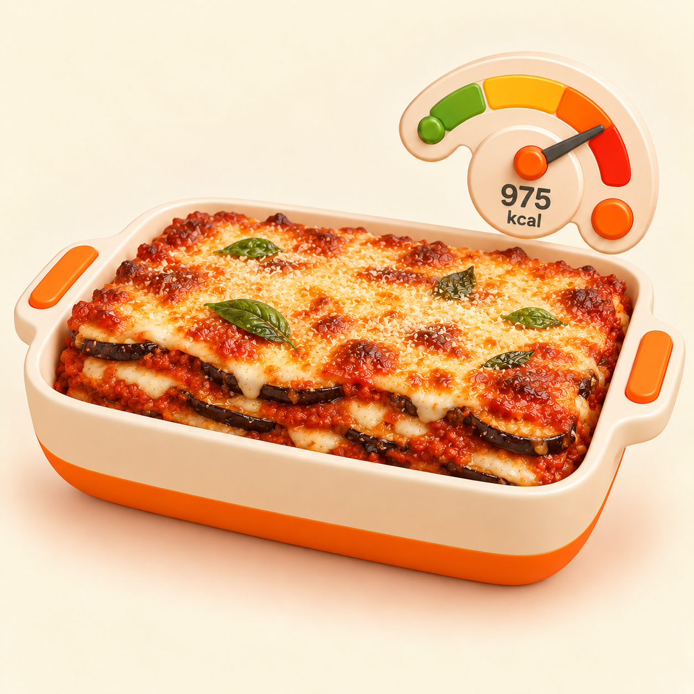

Reference FROZEN p12VESSEL_BAKING_DISH


1254 × 1254 · 1.435.896 byte · SHA-256 bb7b34114530fc2be8f635b1bf13f7c2bc56cf1354e3458be0c4ec496d7a8366
Un solo piatto completo; melanzane, pomodoro e formaggio riconoscibili; gauge esatto; nessun testo o UI estranei.